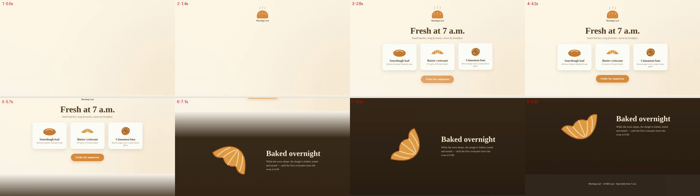

LottieFiles/motion-design-skill
Animation test, 2026-11-18 · Web & UI motion · driven by Claude Code (Claude Opus 5.5) in a throwaway sandbox
The brief: A bakery landing page: the logo draws in, the headline comes in word by word, three cards rise in turn, a button pulses, a croissant turns with the scroll, and nothing moves for reduced motion. Full brief →
What was checked
- ✓ logo draws in
- ✓ headline word by word
- ✓ headline text
- ✓ cards in turn
- ✓ card names
- ✓ button
- ✓ scroll section
- ✓ croissant turns with scroll
- ✓ reduced motion respected
Checked by hand on the full recording: Checked in the page's code: the logo draws in, the headline is split into words with staggered delays, the cards rise one after another; the 8 sampled frames fall between these steps.
The recording: 1280 x 720, 30.0 fps, 10.0 s. Judge (gpt-6-astra, 8 frames): follows the brief 3/5, looks 4/5; noted: Initial frame is essentially blank; Transition frame has partially cropped elements at the top edge.
Time 2.2 min (installing the tool included) · 10 turns · $0.40 at API prices · files: index.html, preview.mp4
The 8 frames the judge saw

The agent's last words
the load sequence for the first 4.6 seconds, then scrolls smoothly to the bottom of the page through "Baked overnight". I made it by stepping the page's animations and scroll position one frame at a time in Chromium, taking a screenshot of each and joining them with ffmpeg, so the timing is exact. I looked at sample frames from the first render. That showed the croissant's edges being cut off as it turned, so I gave it more room and rendered the video again. I did not look at frames from the second render. DELIVERABLE: /home/runner/work/output/index.html, /home/runner/work/output/preview.mp4